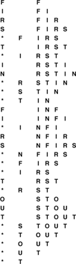
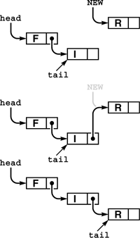
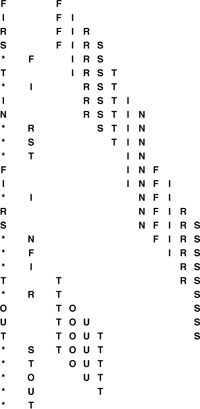

C++ Programming Robert Sedgewick - Princeton University Addison Wesley Professional Algorithms in C++, Parts 1–4: Fundamentals, Data Structure, Sorting, Searching, Third Edition C++ Programming Robert Sedgewick - Princeton University Addison Wesley Professional Algorithms in C++, Parts 1–4: Fundamentals, Data Structure, Sorting, Searching, Third Edition
4.6. FIFO Queues and Generalized Queues
The first-in, first-out (FIFO) queue is another fundamental ADT that is similar to the pushdown stack, but that uses the opposite rule to decide which element to remove for remove. Rather than removing the most recently inserted element, we remove the element that has been in the queue the longest.
Perhaps our busy professor's "in" box should operate like a FIFO queue, since the first-in, first-out order seems to be an intuitively fair way to decide what to do next. However, that professor might not ever answer the phone or get to class on time! In a stack, a memorandum can get buried at the bottom, but emergencies are handled when they arise; in a FIFO queue, we work methodically through the tasks, but each has to wait its turn.
Program 4.13. FIFO queue ADT interface|
This interface is identical to the pushdown stack interface of Program 4.4, except for the names of the functions. The two ADTs differ only in the specification, which is not reflected in the interface code.
template <class Item>
class QUEUE
{
private:
// Implementation-dependent code
public:
QUEUE(int);
int empty();
void put(Item);
Item get();
};
|
FIFO queues are abundant in everyday life. When we wait in line to see a movie or to buy groceries, we are being processed according to a FIFO discipline. Similarly, FIFO queues are frequently used within computer systems to hold tasks that are yet to be accomplished when we want to provide services on a first-come, first-served basis. Another example, which illustrates the distinction between stacks and FIFO queues, is a grocery store's inventory of a perishable product. If the grocer puts new items on the front of the shelf and customers take items from the front, then we have a stack discipline, which is a problem for the grocer because items at the back of the shelf may stay there for a very long time and therefore spoil. By putting new items at the back of the shelf, the grocer ensures that the length of time any item has to stay on the shelf is limited by the length of time it takes customers to purchase the maximum number of items that fit on the shelf. This same basic principle applies to numerous similar situations.
Definition 4.3. A FIFO queue is an ADT that comprises two basic operations: insert (put) a new item, and remove (get) the item that was least recently inserted|
Program 4.13 is the interface for a FIFO queue ADT. This interface differs from the stack interface that we considered in Section 4.2 only in the nomenclature: to a compiler, say, the two interfaces are identical! This observation underscores the fact that the abstraction itself, which programmers normally do not define formally, is the essential component of an ADT. For large applications, which may involve scores of ADTs, the problem of defining them precisely is critical. In this book, we work with ADTs that capture essential concepts that we define in the text, but not in any formal language, other than via specific implementations. To discern the nature of ADTs, we need to consider examples of their use and to examine specific implementations.
Figure 4.6 shows how a sample FIFO queue evolves through a series of get and put operations. Each get decreases the size of the queue by 1 and each put increases the size of the queue by 1. In the figure, the items in the queue are listed in the order that they are put on the queue, so that it is clear that the first item in the list is the one that is to be returned by the get operation. Again, in an implementation, we are free to organize the items any way that we want, as long as we maintain the illusion that the items are organized in this way.
This list shows the result of the sequence of operations in the left column (top to bottom), where a letter denotes put and an asterisk denotes get. Each line displays the operation, the letter returned for get operations, and the contents of the queue in order from least recently inserted to most recently inserted, left to right.

|
To implement the FIFO queue ADT using a linked list, we keep the items in the list in order from least recently inserted to most recently inserted, as diagrammed in Figure 4.6. This order is the reverse of the order that we used for the stack implementation, but allows us to develop efficient implementations of the queue operations. We maintain two pointers into the list: one to the beginning (so that we can get the first element), and one to the end (so that we can put a new element onto the queue), as shown in Figure 4.7 and in the implementation in Program 4.14.
In this linked-list representation of a queue, we insert new items at the end, so the items in the linked list are in order from least recently inserted to most recently inserted, from beginning to end. The queue is represented by two pointers head and tail which point to the first and final item, respectively. To get an item from the queue, we remove the item at the front of the list, in the same way as we did for stacks (see Figure 4.5). To put a new item onto the queue, we set the link field of the node referenced by tail to point to it (center), then update tail (bottom).

We can also use an array to implement a FIFO queue, although we have to exercise care to keep the running time constant for both the put and get operations. That performance goal dictates that we can not move the elements of the queue within the array, unlike what might be suggested by a literal interpretation of Figure 4.6. Accordingly, as we did with the linked-list implementation, we maintain two indices into the array: one to the beginning of the queue and one to the end of the queue. We consider the contents of the queue to be the elements between the indices. To get an element, we remove it from the beginning (head) of the queue and increment the head index; to put an element, we add it to the end (tail) of the queue and increment the tail index. A sequence of put and get operations causes the queue to appear to move through the array, as illustrated in Figure 4.8. When it hits the end of the array, we arrange for it to wrap around to the beginning. The details of this computation are in the code in Program 4.15.
This sequence shows the data manipulation underlying the abstract representation in Figure 4.6 when we implement the queue by storing the items in an array, keeping indices to the beginning and end of the queue, and wrapping the indices back to the beginning of the array when they reach the end of the array. In this example, the tail index wraps back to the beginning when the second T is inserted, and the head index wraps when the second S is removed.

Program 4.14. FIFO queue linked-list implementation|
The difference between a FIFO queue and a pushdown stack (Program 4.8) is that new items are inserted at the end, rather than the beginning. Accordingly, this class keeps a pointer tail to the last node of the list, so that the function put can add a new node by linking that node to the node referenced by tail and then updating tail to point to the new node. The functions QUEUE, get, and empty are all identical to their counterparts for the linked-list pushdown-stack implementation of Program 4.8. Since new nodes are always inserted at the end of the list, the node constructor can set the pointer field of each new node to be null and needs to have only one argument.
template <class Item>
class QUEUE
{
private:
struct node
{ Item item; node* next;
node(Item x)
{ item = x; next = 0; }
};
typedef node *link;
link head, tail;
public:
QUEUE(int)
{ head = 0; }
int empty() const
{ return head == 0; }
void put(Item x)
{ link t = tail;
tail = new node(x);
if (head == 0)
head = tail;
else t->next = tail;
}
Item get()
{ Item v = head->item; link t = head->next;
delete head; head = t; return v; }
};
|
|
Property 4.2. We can implement the get and put operations for the FIFO queue ADT in constant time, using either arrays or linked lists
The same considerations that we discussed in Section 4.4 apply to space resources used by FIFO queues. The array representation requires that we reserve enough space for the maximum number of items expected throughout the computation, whereas the linked-list representation uses space proportional to the number of elements in the data structure, at the cost of extra space for the links and extra time to allocate and deallocate memory for each operation.
Although we encounter stacks more often than we encounter FIFO queues, because of the fundamental relationship between stacks and recursive programs (see Chapter 5), we shall also encounter algorithms for which the queue is the natural underlying data structure. As we have already noted, one of the most frequent uses of queues and stacks in computational applications is to postpone computation. Although many applications that involve a queue of pending work operate correctly no matter what rule is used for remove, the overall running time or other resource usage may be dependent on the rule. When such applications involve a large number of insert and remove operations on data structures with a large number of items on them, performance differences are paramount. Accordingly, we devote a great deal of attention in this book to such ADTs. If we ignored performance, we could formulate a single ADT that encompassed insert and remove; since we do not ignore performance, each rule, in essence, constitutes a different ADT. To evaluate the effectiveness of a particular ADT, we need to consider two costs: the implementation cost, which depends on our choice of algorithm and data structure for the implementation; and the cost of the particular decision-making rule in terms of effect on the performance of the client. To conclude this section, we will describe a number of such ADTs, which we will be considering in detail throughout the book.
Program 4.15. FIFO queue array implementation|
The contents of the queue are all the elements in the array between head and tail, taking into account the wraparound back to 0 when the end of the array is encountered. If head and tail are equal, then we consider the queue to be empty; but if put would make them equal, then we consider it to be full. As usual, we do not check such error conditions, but we make the size of the array 1 greater than the maximum number of elements that the client expects to see in the queue, so that we could augment this program to make such checks.
template <class Item>
class QUEUE
{
private:
Item *q; int N, head, tail;
public:
QUEUE(int maxN)
{ q = new Item[maxN+1];
N = maxN+1; head = N; tail = 0; }
int empty() const
{ return head % N == tail; }
void put(Item item)
{ q[tail++] = item; tail = tail % N; }
Item get()
{ head = head % N; return q[head++]; }
};
|
Specifically, pushdown stacks and FIFO queues are special instances of a more general ADT: the generalized queue. Instances of generalized queues differ in only the rule used when items are removed. For stacks, the rule is "remove the item that was most recently inserted"; for FIFO queues, the rule is "remove the item that was least recently inserted"; and there are many other possibilities.
A simple but powerful alternative is the random queue, where the rule is to "remove a random item," and the client can expect to get any of the items on the queue with equal probability. We can implement the operations of a random queue in constant time using an array representation (see Exercise 4.48). As do stacks and FIFO queues, the array representation requires that we reserve space ahead of time. The linked-list alternative is less attractive than it was for stacks and FIFO queues, however, because implementing both insertion and deletion efficiently is a challenging task (see Exercise 4.49). We can use random queues as the basis for randomized algorithms, to avoid, with high probability, worst-case performance scenarios (see Section 2.7).
We have described stacks and FIFO queues by identifying items according to the time that they were inserted into the queue. Alternatively, we can describe these abstract concepts in terms of a sequential listing of the items in order, and refer to the basic operations of inserting and deleting items from the beginning and the end of the list. If we insert at the end and remove at the end, we get a stack (precisely as in our array implementation); if we insert at the beginning and remove at the beginning, we also get a stack (precisely as in our linked-list implementation); if we insert at the end and remove at the beginning, we get a FIFO queue (precisely as in our linked-list implementation); and if we insert at the beginning and remove at the end, we also get a FIFO queue (this option does not correspond to any of our implementations—we could switch our array implementation to implement it precisely, but the linked-list implementation is not suitable because of the need to back up the pointer to the end when we remove the item at the end of the list). Building on this point of view, we are led to the deque ADT, where we allow either insertion or deletion at either end. We leave the implementations for exercises (see Exercises 4.43 through 4.47), noting that the array-based implementation is a straightforward extension of Program 4.15, and that the linked-list implementation requires a doubly linked list, unless we restrict the deque to allow deletion at only one end.
In Chapter 9, we consider priority queues, where the items have keys and the rule for deletion is "remove the item with the smallest key." The priority-queue ADT is useful in a variety of applications, and the problem of finding efficient implementations for this ADT has been a research goal in computer science for many years. Identifying and using the ADT in applications has been an important factor in this research: we can get an immediate indication whether or not a new algorithm is correct by substituting its implementation for an old implementation in a huge, complex application and checking that we get the same result. Moreover, we get an immediate indication whether a new algorithm is more efficient than an old one by noting the extent to which substituting the new implementation improves the overall running time. The data structures and algorithms that we consider in Chapter 9 for solving this problem are interesting, ingenious, and effective.
In Chapters 12 through 16, we consider symbol tables, which are generalized queues where the items have keys and the rule for deletion is "remove an item whose key is equal to a given key, if there is one." This ADT is perhaps the most important one that we consider, and we shall examine dozens of implementations.
Each of these ADTs also give rise to a number of related, but different, ADTs that suggest themselves as an outgrowth of careful examination of client programs and the performance of implementations. In Sections 4.7 and 4.8, we consider numerous examples of changes in the specification of generalized queues that lead to yet more different ADTs, which we shall consider later in this book.
Exercises |  4.36 Give the contents of q[0], ..., q[4] after the execution of the operations illustrated in Figure 4.6, using Program 4.15. Assume that maxN is 10, as in Figure 4.8. 4.36 Give the contents of q[0], ..., q[4] after the execution of the operations illustrated in Figure 4.6, using Program 4.15. Assume that maxN is 10, as in Figure 4.8.
| | 4.37 A letter means put and an asterisk means get in the sequence
E A S * Y * Q U E * **S T* **I O*N ***.
Give the sequence of values returned by the get operations when this sequence of operations is performed on an initially empty FIFO queue. | | 4.38 Modify the array-based FIFO queue implementation in the text (Program 4.15) to call a function error() if the client attempts to get when the queue is empty or to put when the queue is full.
| | 4.39 Modify the linked-list–based FIFO queue implementation in the text (Program 4.14) to call a function error() if the client attempts to get when the queue is empty or if there is no memory available from new for a put.
| | 4.40 An uppercase letter means put at the beginning, a lowercase letter means put at the end, a plus sign means get from the beginning, and an asterisk means get from the end in the sequence
E A s + Y + Q U E **+ s t + *+ I O*n ++*.
Give the sequence of values returned by the get operations when this sequence of operations is performed on an initially empty deque. | | 4.41 Using the conventions of Exercise 4.40, give a way to insert plus signs and asterisks in the sequence E a s Y so that the sequence of values returned by the get operations is (i) E s a Y ; (ii) Y a s E ; (iii) a Y s E ; (iv) a s Y E ; or, in each instance, prove that no such sequence exists. | |  4.42 Given two sequences, give an algorithm for determining whether or not it is possible to add plus signs and asterisks to make the first produce the second when interpreted as a sequence of deque operations in the sense of Exercise 4.41. 4.42 Given two sequences, give an algorithm for determining whether or not it is possible to add plus signs and asterisks to make the first produce the second when interpreted as a sequence of deque operations in the sense of Exercise 4.41.
| | 4.43 Write an interface for the deque ADT. | | 4.44 Provide an implementation for your deque interface (Exercise 4.43) that uses an array for the underlying data structure.
| | 4.45 Provide an implementation for your deque interface (Exercise 4.43) that uses a doubly linked list for the underlying data structure.
| | 4.46 Provide an implementation for the FIFO queue interface in the text (Program 4.13) that uses a circular list for the underlying data structure.
| | 4.47 Write a client that tests your deque ADTs (Exercise 4.43) by reading, as the first argument on the command line, a string of commands like those given in Exercise 4.40 then performing the indicated operations. Add a member function dump to the interface and implementations, and print out the contents of the deque after each operation, in the style of Figure 4.6.
| |  4.48 Build a random-queue ADT by writing an interface and an implementation that uses an array as the underlying data structure. Make sure that each operation takes constant time. 4.48 Build a random-queue ADT by writing an interface and an implementation that uses an array as the underlying data structure. Make sure that each operation takes constant time.
| |  4.49 Build a random-queue ADT by writing an interface and an implementation that uses a linked list as the underlying data structure. Provide implementations for insert and remove that are as efficient as you can make them, and analyze their worst-case cost. 4.49 Build a random-queue ADT by writing an interface and an implementation that uses a linked list as the underlying data structure. Provide implementations for insert and remove that are as efficient as you can make them, and analyze their worst-case cost.
| | 4.50 Write a client that picks numbers for a lottery by putting the numbers 1 through 99 on a random queue, then prints the result of removing five of them. | | 4.51 Write a client that takes an integer N from the first argument on the command line, then prints out N poker hands, by putting N items on a random queue (see Exercise 4.7), then printing out the result of picking five cards at a time from the queue.
| | 4.52 Write a program that solves the connectivity problem by inserting all the pairs on a random queue and then taking them from the queue, using the quick-find–weighted algorithm (Program 1.3). |
|